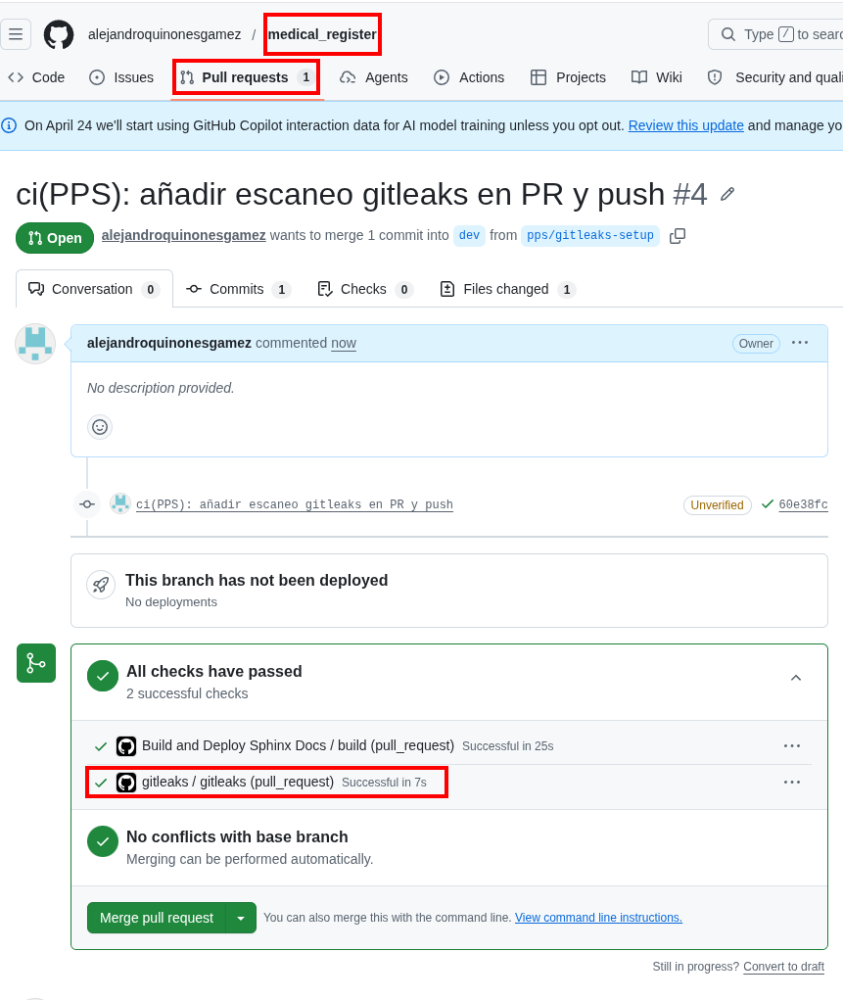
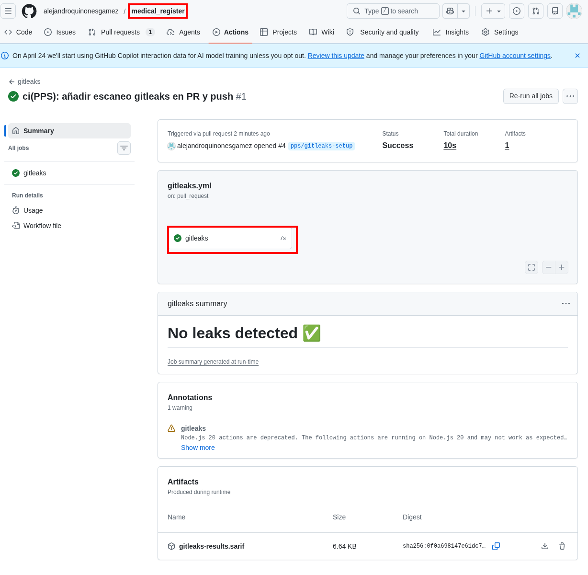
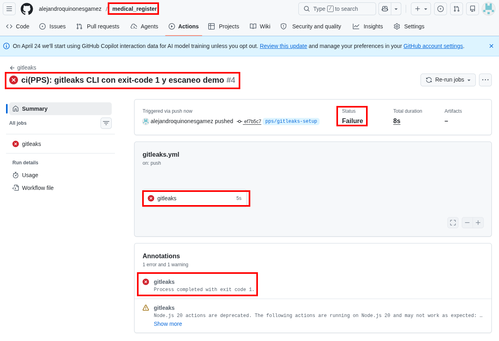

Gitleaks — Escaneo de secretos en Git y CI¶
Autores: Alejandro Quiñones Gámez & Adrián Bertos Gómez
Asignatura: PPS — Puesta a Producción Segura
Curso: Curso de Especialización en Ciberseguridad en Tecnologías de la Información
Centro: IES Zaidín-Vergeles
Enunciado: docs/git_docs/PPS_git/gitleaks.html (Fernando Raya, 2026-04-20)
Repositorios de este trabajo (espacio de trabajo PPS)¶
Proyecto |
Ruta local |
Remoto |
Rama habitual |
|---|---|---|---|
Cliente Android |
|
|
|
Backend |
|
|
|
El workflow de ejemplo del §4 conviene añadirlo en el repo donde tengáis CI (normalmente el backend). Escaneo local: ejecutar gitleaks detect desde la raíz de cada clone tras cd a la ruta correspondiente.
cd "/home/alejandro/DriveLocal/alejandro/Ciberseguridad/PPS - Puesta a Producción Segura/Aplicación Médica"
gitleaks detect --verbose
1. Qué es Gitleaks¶
Gitleaks es una herramienta de código abierto orientada a detectar secretos (contraseñas, claves API, tokens) en repositorios Git. Combina reglas basadas en expresiones regulares con heurísticas de entropía para reducir ruido.
Encaja en la categoría amplia de análisis estático orientado a seguridad; se puede ejecutar:
En local (incluido hook pre-commit) para no ensuciar el historial.
En CI/CD (p. ej. GitHub Actions) para rechazar merges o pushes con fugas.
Referencias del enunciado:
2. Si Gitleaks detecta algo¶
Paso |
Acción |
|---|---|
1 |
Invalidar el secreto en el origen (rotación / revocación). Un |
2 |
Eliminar el secreto del historial si llegó al remoto compartido ( |
3 |
Añadir patrones a |
3. Beneficios en equipo¶
Reduce riesgo legal y operativo (filtraciones a nube pública).
Educa a usar variables de entorno y GitHub Secrets en lugar de literales.
Deja auditoría de que el pipeline exige escaneo.
4. Automatización con GitHub Actions¶
El enunciado propone un workflow mínimo. Adaptación recomendada para este monorepo (.github/workflows/gitleaks.yml):
name: gitleaks
on:
pull_request:
push:
branches: [main, master, dev]
jobs:
scan:
name: gitleaks
runs-on: ubuntu-latest
steps:
- uses: actions/checkout@v4
with:
fetch-depth: 0
- uses: gitleaks/gitleaks-action@v2
env:
GITHUB_TOKEN: ${{ secrets.GITHUB_TOKEN }}
fetch-depth: 0 es importante para que el escaneo pueda inspeccionar el historial completo en ramas largas.
4.1. Actividad: probar con un secreto de laboratorio¶
Crear una rama
chore/gitleaks-demo.Añadir un fichero con un token ficticio pero con formato reconocible (o un PAT de GitHub de práctica revocable).
Abrir PR y ver el job fallar con el informe de Gitleaks.
Documentar captura del log y el listado de hallazgos.
Borrar el secreto del commit y cerrar la PR sin fusionar (o fusionar solo tras limpieza).
5. Uso local¶
5.1. Instalación¶
Según plataforma: binario desde releases, paquete del sistema o go install. Para pre-commit, seguir la sección Pre-commit del README oficial.
5.2. Escaneo manual¶
En la raíz del repositorio:
gitleaks detect --verbose
Opciones útiles:
--no-git: escanear solo el árbol de trabajo.--redact: ocultar fragmentos sensibles en el log al compartir salida.
5.3. Integración pre-commit¶
Añadir el hook oficial del README de Gitleaks al .pre-commit-config.yaml del proyecto para que antes de crear el commit se ejecute gitleaks protect (modo staged) o la variante recomendada en la documentación vigente.
6. Falsos positivos y .gitleaks.toml¶
Cuando una cadena legítima coincide con una regla, se puede:
Añadir allowlist global (
paths,regexes, huellas).Definir reglas propias para secretos internos concretos.
Usar baseline para congelar hallazgos históricos conocidos mientras se remedia por fases (ver documentación Creating a baseline).
Extracto ilustrativo del enunciado (no copiar ciegamente: ajustar a las reglas reales del proyecto):
title = "gitleaks config"
[allowlist]
description = "global allow lists"
regexes = [
'''219-09-9999''',
]
paths = [
'''\.md$''',
]
[[rules]]
description = "Discord API key"
id = "discord-api-token"
regex = '''(?i)(?:discord)(?:[0-9a-z\-_\t .]{0,20})(?:[\s|']|[\s|"]){0,3}(?:=|>|:=|\|\|:|<=|=>|:)(?:'|\"|\s|=|\x60){0,5}([a-f0-9]{64})(?:['|\"|\n|\r|\s|\x60]|$)'''
secretGroup = 1
keywords = ["discord"]
Buena práctica: solo allowlistear tras revisar el hallazgo y con justificación en el mensaje de commit o en la documentación del equipo.
7. Lecturas adicionales¶
8. Implementación en medical_register¶
Workflow desplegado en .github/workflows/gitleaks.yml:
Disparadores:
pull_request,push,workflow_dispatch.Instalación de Gitleaks CLI con
--exit-code 1(el job falla si hay hallazgos).Si existe la carpeta de demo
docs/git_docs/PPS_git/_demo_gitleaks/, escaneo directo con--no-git(útil para reproducir el fallo en re-runs).
Rama de trabajo de la práctica: pps/gitleaks-setup → PR a dev.
9. Evidencias (entrega) — Apartado 3: Gitleaks¶
# |
Qué demuestra |
Fichero |
|---|---|---|
1 |
PR con check gitleaks en verde (sin secreto en el diff) |
|
2 |
Detalle del run: No leaks detected / job |
|
3 |
Run en rojo tras PAT ficticio en |
|
4 |
(Opcional) Run verde tras |
|
{kind=link}
{kind=link}
{kind=link}



Flujo documentado: integración en CI → prueba negativa (fallo) → limpieza y revocación de credenciales de prueba si se usó un PAT real.
Guía operativa: pasos.md §3.
Autores: Alejandro Quiñones Gámez & Adrián Bertos Gómez
Asignatura: PPS — Puesta a Producción Segura
Curso: Curso de Especialización en Ciberseguridad en Tecnologías de la Información
Centro: IES Zaidín-Vergeles